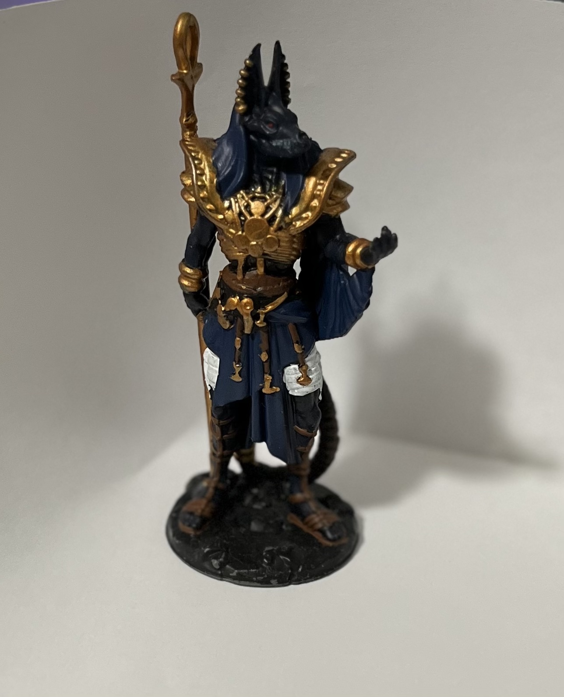
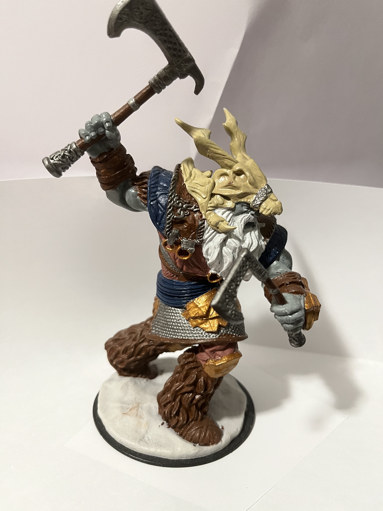

All of these are my own personal projects, and I'd be happy to walk you through my thoughts on colors and layering. In order to create a cohesive looking miniature you must first decide which colors you want to work with. I suggest 1-2 main colors with a couple secondary colors and an accent color or 2. While you do want to make sure the colors work well together, you will want to ensure that there is also some contrast between the primary and secondary colors, this makes your mini POP.
When it comes to layering I generally suggest starting with sections of the mini that are potentially difficult to reach, it's much easier to fix any mistakes when most of the mini is unpainted so lets take care of those difficult areas to reach. After the difficult spots have been handled, you want to start on the lowest layers of the model. For example when painting the giant you see in this gallery, I started with the skin tone, followed by the chainmail, followed by the accent pieces of his armor like the sash and thigh guards. It's important to build good habits when first starting the hobby, picking good supporting colors that also have decent contrast and also learning how to paint in layers are a great place to start.
